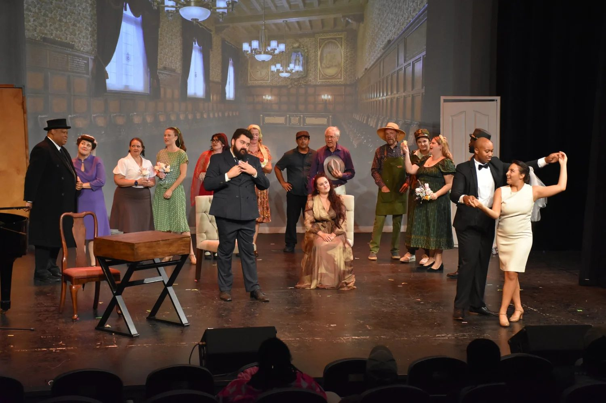

It’s back to School! [Fall 2026]
Sep 15, 2026 · Written by Maya Goell
Autumn Newsletter
The summer flew by and just like that, it’s my favorite season. Even though the weather is pretty much the same, I get to enjoy pumpkin spiced everything, the opera season is about to start, and all my beloved students come back from their summer adventures!
I had a magical time singing my all-time dream role of Susannah in Mozart’s Le Nozze di Figaro. I love how funny she is, always playing tricks on the other characters, and she gets a happy ending. Enjoy these fake wedding pictures!

Win two free tickets to my SDO Solo debut
Follow the link below to write me a positive review on Google business and enter a raffle to win two tickets to Rigoletto this October!
📍 Find me on Google Business
Back to school referral special!
Tell your friends about me and for every new student you send my way, I’ll gift you one free 60 minute lesson.
Practicing… While sick
Just the other month I got the nastiest cold. I couldn’t talk, let alone sing, even though I had several looming performances and auditions (some I had to cancel). I had to stay sharp, even though I couldn’t practice.
Prioritize rest, hydrate like a crazy person, and do what you can from there
Performing
While singing the lead in a three hour long Mozart opera, I kept finding myself so stressed out about this scene or that line. There I was singing my dream role, and I realized I couldn’t enjoy it! I forced myself to remember to enjoy the music. Who knows when I’ll get to perform this role again?
Never forget to have fun!
Follow me for more
Maya Goell
Musical Musings and More [Summer 2026]
Sep 15, 2026 · Written by Maya Goell
Hey guys! I’m trying something new here, a Quarterly newsletter for my friends and students. This is mostly to build community in my studio and keep my hoards of adoring fans (my mom and my mom’s friends) up to date.
Musical Musings
I am happy to share that I was awarded the First Prize at the Virginia Hawk Vocal Awards last month. I spent a lovely day sharing music with old and new friends in a lovely hall.

I can’t lie, I’m not the best at competing. I don’t know why, but I get way more nervous doing competitions than auditions or even performing, so I was very happy with how I did. I’m even more excited to invest that prize money in some new recordings for the next audition season.
The grind never ends!
Speaking of the grind, in my quest to continue growing my studio, YOU can help. Yes, YOU! by leaving a review on my Google Business Profile, you can help me
Leave me a review
Technical tips for students
Learning
I’m currently learning an entire opera, Le Nozze di Figaro. Almost three hours of me running around in Italian wearing a cute maid costume. The secret is that is is separated into four acts. each act is separated into a dozen or so scenes. Those scenes are further divided into sections, phrases, and notes. I keep dividing the music into manageable sections.
“God is in the details.”
—Stephen Sondheim
Practicing
Lately, I have been returning to Hannon’s The Virtuoso Pianist. I’m no virtuoso, but it helps... I like to return to a piece after a while to see how my technique has changed.
Try playing or singing something that you haven’t done in a while. does it feel different? What changed?
Performing
In the trenches of competition season, the horrors persist yet so do I. Even though I will probably never enjoy competition per se, it’s important for me to receive feedback from judges who have never heard from me before. They give me a fresh perspective and tips that I might not have thought of myself.
Perform a piece for someone who has never heard you before and see if you can guess what they think!
Come See Me Perform!
This August, I will be performing the role of Susanna in Mozart’s magnum opus and my most favorite operas of all time, Le Nozze di Figaro! If you happen to be free on the last weekend of August, this is an outing. You will be hearing probably the most universally beloved operas in the repertoire sung by the best local talent. Obviously, I’m highly biased but I’m kind of working with a dream team for this one.
Check it out!
If you have read this far into my newsletter, thank you so much for reading and I promise not to spam you!
Maya Goell